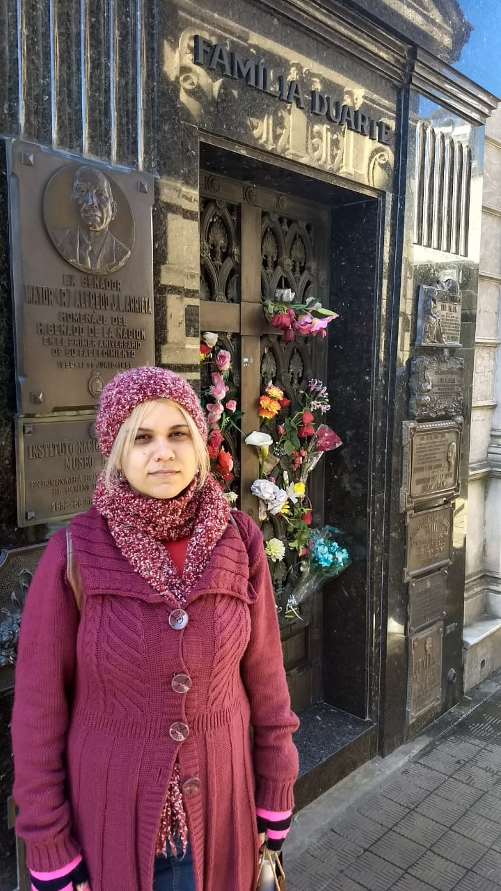
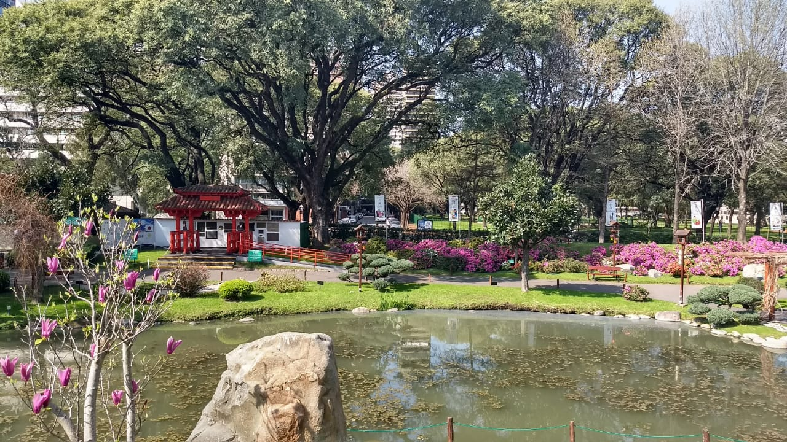
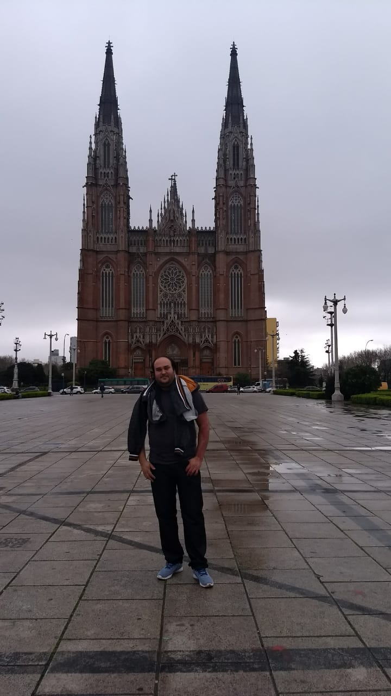
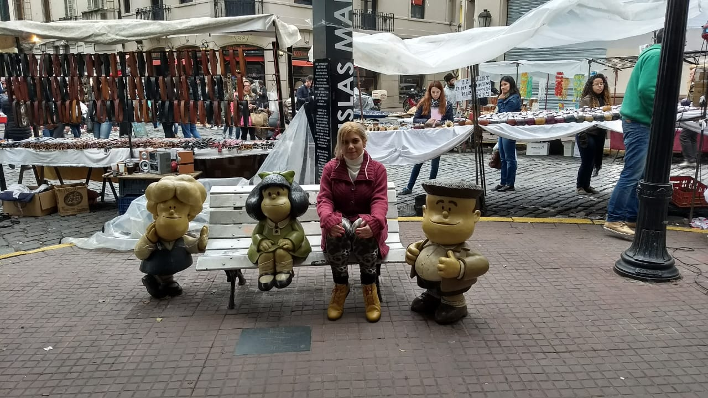
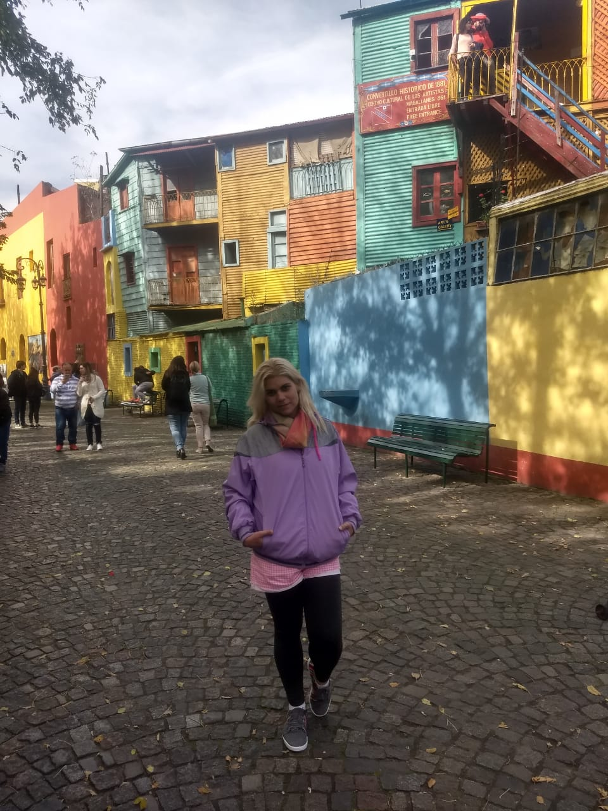
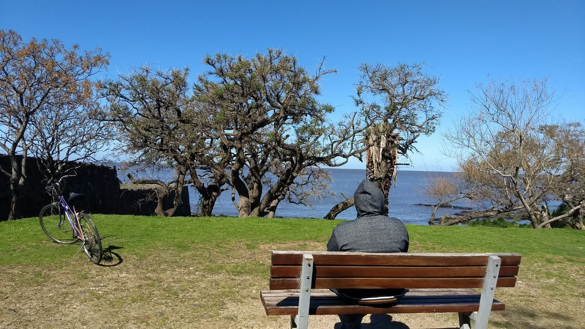

DIA 01
Sugestão; jogar as malas no apt ou hotel, e ir conhecer ou os bares ao ar livre no Terrazas de Recoleta ou irem a Plaza Serrano em Palermo onde se encontra um monte de bares,pubs, boates etc.
Podem ir ao centro de Buenos Aires também a noite, é bem iluminado e interessante, ver o Obelisco e a agitação do centro ou ver alguma peça no Teatro Colón.
DIA 02
Conhecer o bairro da Recoleta ; cemitério da recoleta, centro cultural de recoleta, Palais de Glace, MNBA – museo de bellas artes, atrás do mesmo na outra avenida,se encontra a Faculdade de Direito e ao lado a Flor de Metal ( Floralis Generica). No bairro também há uma feirinha bem em frente ao centro cultural,as vezes tem algo interessante,mas não comprem muita coisa la pois os presentinhos são mais baratos na feira de telmo.
Dêem um pulo no Hardrock Café que fica no Terrazas , no bairro também tem dois bares interessantes com Rooftop , esses bares ficam um pouco antes da entrada do cemitério de recoleta, mas também há o Terrazas de Recoleta que tem vários pubs abertos ao ar livre, bastante legal la, ultima vez fiquei no Aribau.
DIA 03
DEPENDENDO DE ONDE IRÃO FICAR; VISITAR LOGO O PARQUE EL ROSEDAL, APÓS UMA CAMINHADA DE 800 METROS, IR CONHECER O JARDIM JAPONÊS E CASO SEJA INTERESSANTE IR AO PLANETARIO GALILEU GALILEI, MAS PARA ISSO , SUGIRO IR A NOITE ASSIM IRÃO VER O LOCAL ILUMINADO, A TARDE É MEIO CHATINHO E BOBO.
A NOITE SUGIRO IREM A PLAZA SERRANO CURTI, POIS A MESMA TEM UM MONTE DE BARES, SE QUISEREM PROVAR UM BIFE DE CHORIZO,SUGIRO IREM AO DON JULIO https://www.parrilladonjulio.com/ ( VERIFICAR NO SITE DELES E FAZER UMA RESERVA ANTES É RECOMENDADO)
DIA 04
- http://filosofiadeviajante.com.br/2018/10/05/la-plata-o-que-fazer-e-como-chegar/
- https://www.buenosairesturismo.com.br/passeios/tigre-delta.php
- https://viajeseumundo.com/como-ir-de-buenos-aires-a-tigre-por-conta-propria/
Eu, sugiro irem a La Plata a antiga capital da argentina, acho espetacular o Museo de ciências naturales que fica no meio do bosque da cidade, a catedral é magnífica. O centro de Buenos Aires vocês podem fazer em qualquer horário no domingo após saírem da feira de san telmo,pois a saída da feira dar no meio da praça onde se localiza a Casa Rosada , Catedral, Centro Cultural Kichner etc.
Há também a opção de fazerem o passeio de barco a cidade de Tigre,mas acho muito restrito e chato, a cidade de tigre é boa para foto apenas, não achei isso tudo.
EXTRAS
Tirem um domingo para visitar a Feira de San Telmo.
SUGIRO SOLICITAR UM UBER, PARA CONHECEREM O BAIRRO DO CAMINITO LOGO CEDO AS 10H00, LA BOMBONERA, ( não se afastem dos locais turísticos,pois o bairro é perigoso e famoso por ter assalto a turistas). ASSIM QUANDO SAIR DE LA SEGUIR COM TODA CERTEZA SEGUIR DE UBER PARA A FEIRA DE SAN TELMO PARA GASTAR OS E PESOS LA EM LEMBRANÇAS ETC,POIS NÃO ENCONTRARÃO LUGARES MAIS BARATOS ; ARTESANATOS,COURO, DOCE DE LEITE,CARTEIRAS,BOLSAS,SSOUVENIRS ETC. PROXIMO A FEIRA TEM A FAMOSA ESTATUA DA MAFALDA PARA TIRAREM FOTOS.
- Solicitem o Uber na avenida onde se tem a vista para o mar ,fica mais fácil para seguirem a feira de telmo.
- Ao solicitarem o uber, coloquem o ponto de parada – Mafalda San Telmo.
A noite sugiro irem a Puerto Madero, para conhecer ,pois é muito bonito la, com vários restaurantes. Ultima vez que fui fiquei uma cervejaria – The Temple, com vista para Puente de La Mujer.
TIREM UMA NOITE E VISITEM ALGUMA CASA DE SHOW DE TANGO!!!
DIA EXTRA
CASO TENHA MAIS ALGUM DIA ,SUGIRO FAZER O BATE E VOLTA PARA CIDADE DE COLÔNIA DO SACRAMENTO